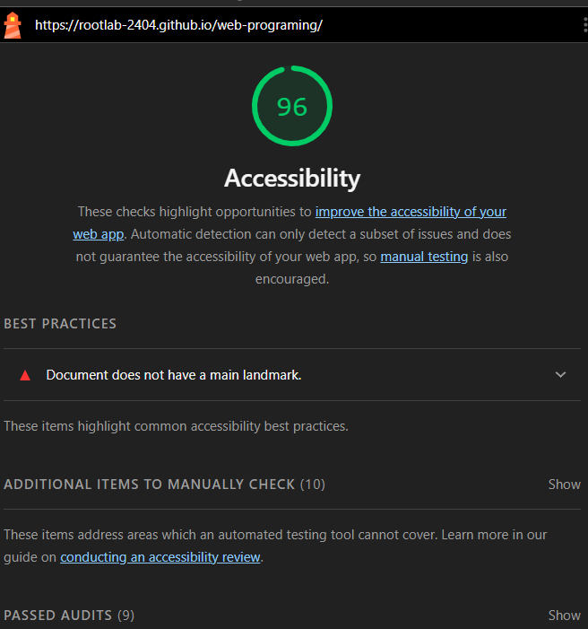

I ran Lighthouse on my own Web Programming assignment site, fixed every failing check, then went through all the hub pages by hand to find problems Lighthouse can't see.
Score before: 96 out of 100. Target after fixes: 100 out of 100.
1Lighthouse check failing
13pages with the same problem
6more issues found by hand
0axe-core violations after
02
How I tested
Automated tools first, then manual checks.
LighthouseChrome DevTools, Accessibility category, on the live GitHub Pages site.
axe-coreThe same engine Lighthouse uses, run on all 20 pages, including the hub pages.
KeyboardTab through each page. Can I reach and see every link?
Code reviewRead the HTML for broken structure, wrong titles and missing pages.
03
Initial audit
The first Lighthouse run, before any changes.

Lighthouse accessibility result before the fixes: 96 / 100.
What Lighthouse reported
FailedDocument does not have a main landmark.
Screen reader users can press one key to jump to the <main> region and skip menus and headers. My page had no <main>, so there was nothing to jump to.
What I found by hand
The same missing landmark on all 12 hub pages
Tiny click targets on every week card
Broken HTML in 3 files
A missing page and a duplicated page in Week 9
A low-contrast button on the sign-up form
No headings on the hub pages
04
Problems and changes made
Each problem, why it matters, and the code before and after.
LighthouseWCAG 1.3.1 · 2.4.1
1. No main landmark, no navigation list
The home page was built only from divs. I wrapped the content in <main>, turned the profile into a <header>, and put the week links in a labelled <nav> list. A screen reader now says "navigation, Weekly assignments, list, 8 items".
All 12 week and sub-week pages had the same problem. Each one now has a <main>, an <h1> such as "Week 4", and a "← All weeks" link back to the home page.
ManualWCAG 2.5.8 Target Size
3. Click targets too small
Each week card looked like a big button, but only the words were a link. Clicking anywhere else on the card did nothing. That's hard for people with shaky hands or on touch screens. The link now fills the whole 56px-tall card and has a visible focus outline.
Before
a { text-decoration: none; }
.week-card { padding: 0 24px; … }
/* link = text only */
week8container.html contained two complete HTML documents, one after the other, and the second was titled "Week 2 Container".
week2_2.html was titled "Week 2_1 Exercises".
The Week 7 hub page was empty.
Page titles are the first thing a screen reader reads, so a wrong title tells users they are on the wrong page.
ContrastWCAG 1.4.3
5. Sign-up button text too light
White text on the green #0f9d58 button measured only 3.5:1, below the 4.5:1 minimum. The form now uses the shared indigo button: white on #4338ca is 7.9:1, which also passes AAA.
The Access Lab linked to alt.html, which didn't exist (a 404). I built the Alt text workshop.
The sign-up page had no <main>, no skip link and no way back, and its first heading was an h2.
The old Week 9-2 page was a copy of the 9-1 audit. This report replaces it, and every Week 9 page now links here.
05
Results by page
axe-core (WCAG 2.1 A/AA plus best practices), run after the fixes.
Accessibility results for each page after the fixes
Page
Main landmark
h1
Violations
Home (index.html)
Yes
Yes
0
Week 2–9 hub pages (8)
Yes
Yes
0
Sub-week pages (4)
Yes
Yes
0
Week 9-1 Access Lab (6 pages)
Yes
Yes
0
Week 9-2 this report
Yes
Yes
0
06
Why these changes matter
Who each fix helps.
Landmarks and headings
Screen reader users jump straight to the content or the list of weeks instead of listening to everything.
Bigger targets
People with tremors, or anyone using a phone, can hit the link easily.
Contrast and valid HTML
Readable for people with low vision, and browsers build the page structure correctly.
96 → 100
Final audit
The only failing Lighthouse check, the missing main landmark, is fixed on every page, and axe-core finds no violations on any of the 20 pages. Keyboard-only use and 200% zoom still need checking by hand, using the checklist on the self-audit page.